What is DI?
- Team challenge chosen from categories below + a surprise Instant Challenge.
- Make a story (skit), engineer props/tech, and perform live.
- Student-run: you plan, build, rehearse; adults coach process, not solutions.
- Scored on creativity, teamwork, and how well your build works on stage.
Choose a Challenge Area
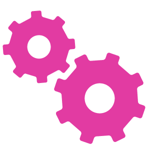
Technical
Build a device or mechanism that performs reliably on stage—then weave it into a story.
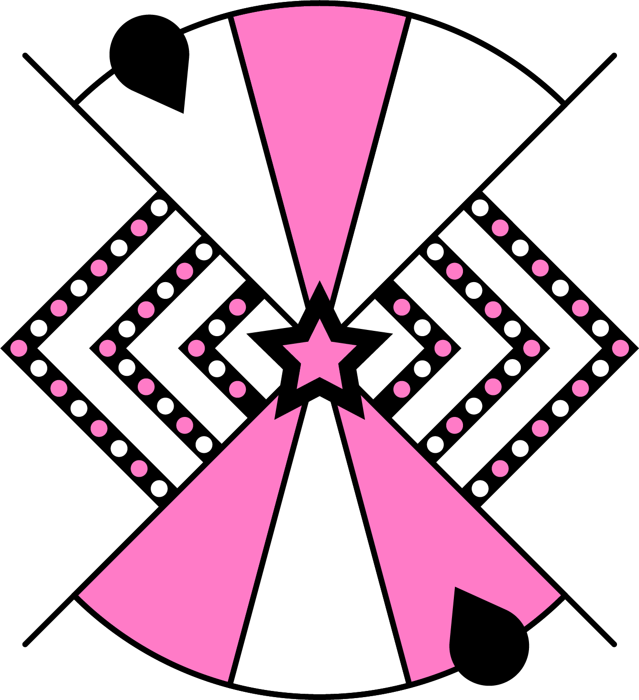
- Good for: builders, coders, problem-solvers
- Skills: prototyping, testing, storytelling
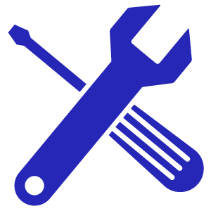
Engineering
Design and build a structure or object that meets weight/strength or task goals—then show it off in a skit.
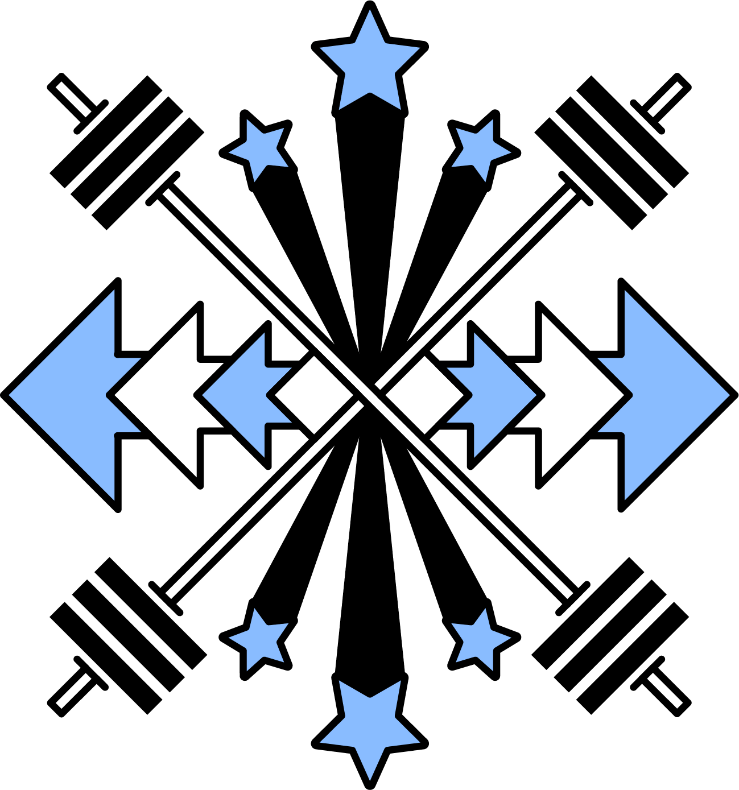
- Good for: tinkerers, designers, precise builders
- Skills: materials, iteration, stagecraft
Scientific
Explain a science idea with a creative performance and a working demonstration or effect.
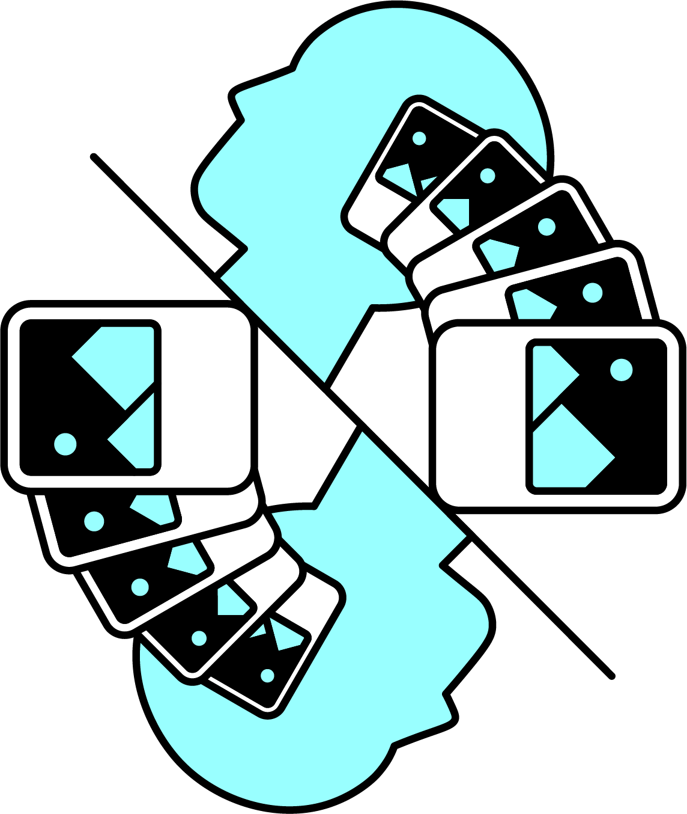
- Good for: explainers, experimenters, visualizers
- Skills: modeling, clarity, audience engagement
Fine Arts
Tell a story with bold design: sets, costumes, props, music, and visual tricks.
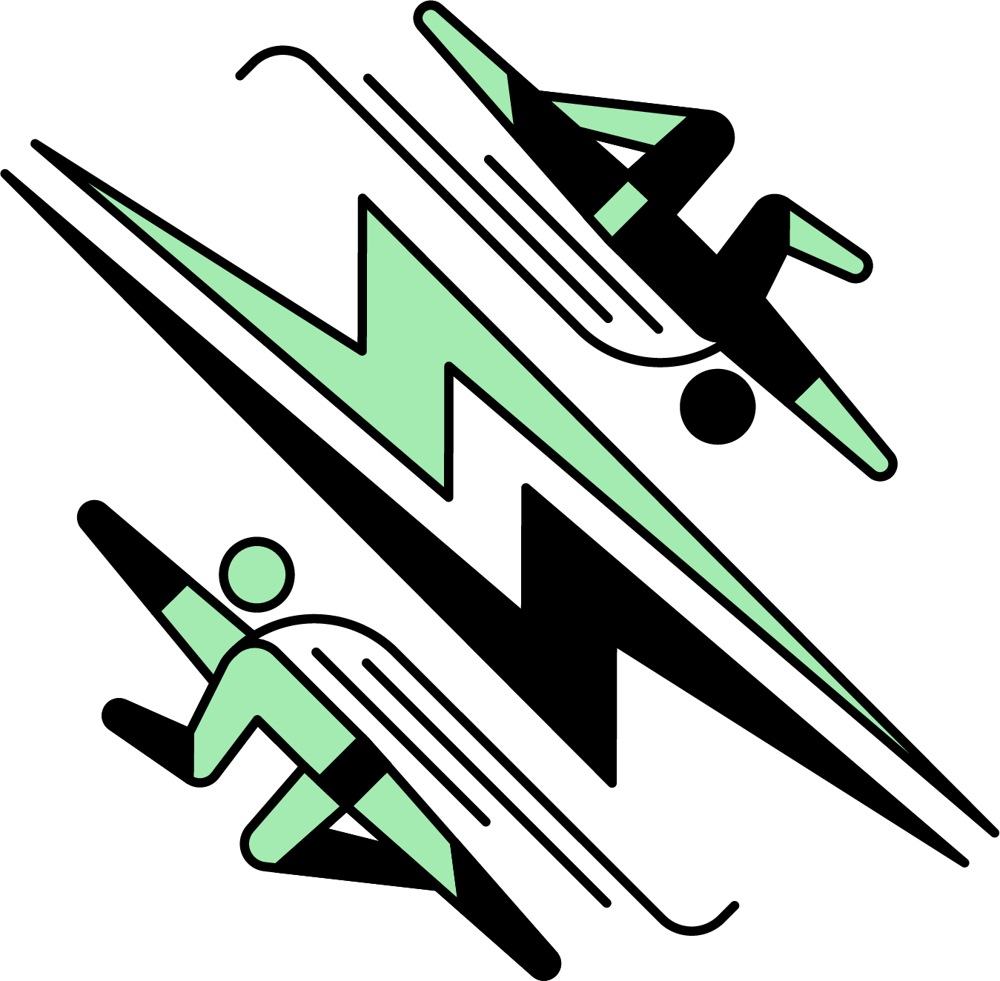
- Good for: artists, performers, makers
- Skills: design, composition, stage timing
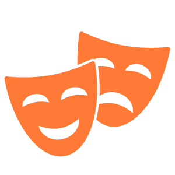
Improvisational
Perform a skit built from surprise prompts, with almost no time to prepare.
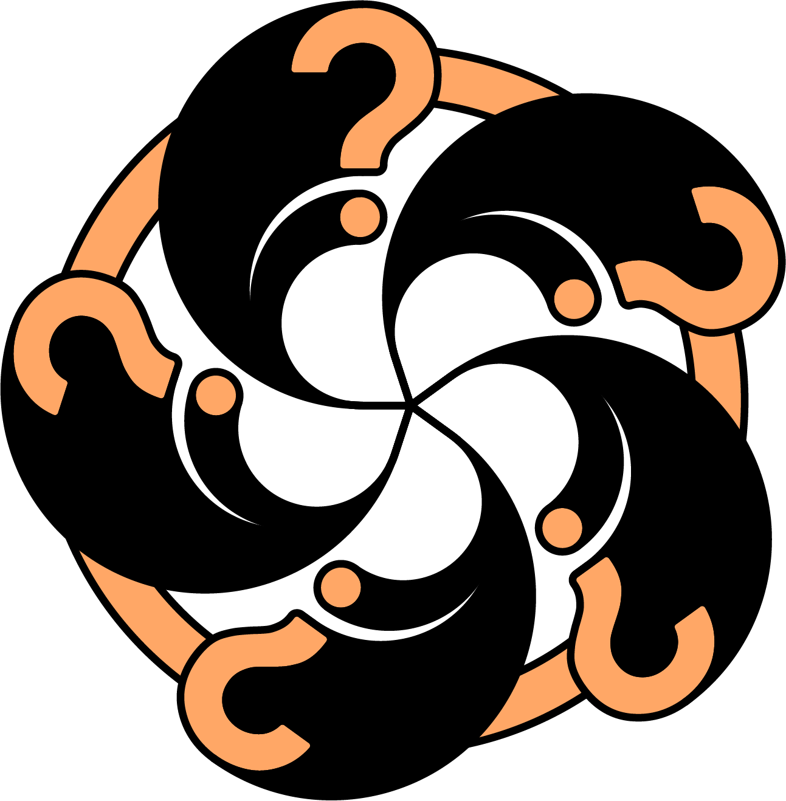
- Good for: actors, fast thinkers, storytellers
- Skills: collaboration, adaptability, presence
Service Learning
Plan and complete a community project, then present the impact with evidence and a story.
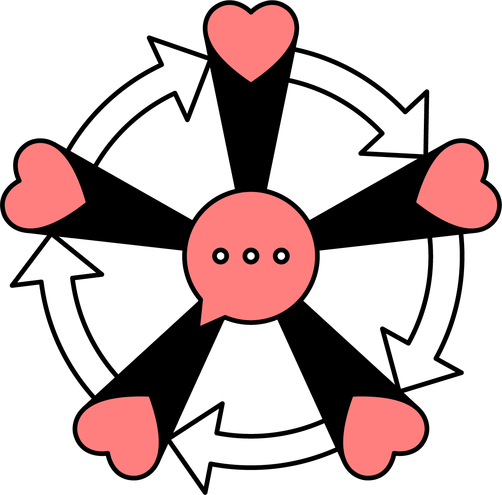
- Good for: organizers, advocates, communicators
- Skills: research, outreach, reflection
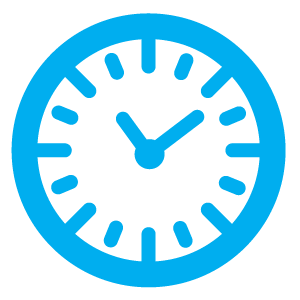
Instant Challenge (Everyone)
5–8 minute surprise task. Build, communicate, or act—no adults helping, and a clock running.
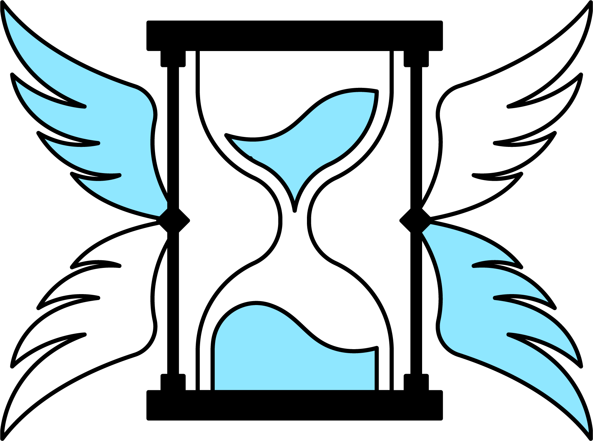
- Good for: quick thinkers, calm under pressure
- Skills: planning fast, sharing roles, creativity
DI — When it’s a good fit
- You like skits/acting and building props or effects.
- You want one big team project + live performance.
- You enjoy open-ended creativity over strict specs.
- You want to blend engineering + art + story.
TSA — When it’s a better fit
- You prefer individual or small-team events (coding, CAD, video, etc.).
- You like clear specs/rules and judged submissions over live skits.
- You want competitive STEM categories without performance.
- You enjoy technical artifacts (robots, designs, software) as the focus.